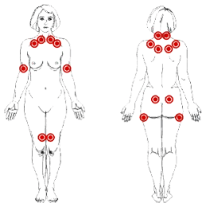

Tudo sobre a coluna vertebral.

A síndrome dolorosa miofascial é definida como uma disfunção neuromuscular regional que tem como característica a presença de regiões sensíveis em bandas musculares contracturadas e/ou tensas que produzem dor referida em áreas distantes ou adjacentes. Esta dor miofascial pode se originar em um único músculo ou pode envolver vários músculos, gerando padrões complexos e variáveis de dor (WOLENS, 1998).
Vários factores são precipitantes: traumas (macro e micro traumas), infecção ou inflamação devido a uma patologia de base, alterações biomecânicas apendiculares (discrepância de membros, aumento acentuado dos seios) e axiais posturais, distensões crónicas, esfriamento de músculos fatigados, miosite aguda, isquemia visceral (ZOHN, 1988). Outras causas incluem: lesões localizadas de músculos, ligamentos, cápsulas articulares, doenças viscerais, desequilíbrios endócrinos, exposição prolongada ao frio, deficiência de vitaminas C, complexo B, estrógeno, K+ e Ca+ , anemia, baixa taxa metabólica, hipotireoidismo, creatinúria, estress emocional, tensão fadiga, inflamação, deficiência muscular (MANNHEIMER E LAMPE, 1984; FISHER, 1986). Estes fatores não corrigidos, podem perpetuar a dor miofascial (ZOHN, 1988).
A síndrome miofascial tem componentes essenciais: ponto-gatilho, espasmo muscular segmentar, dor referida e o envolvimento de partes moles.
SIMONS (1990) apud MUSSE (1995) estabeleceu cinco componentes que podem ser usados como critério diagnóstico:
As zonas de pontos-gatilhos foram primeiramente descritas em 1936 com a reprodução de dor referida para ombro e braço por pressão na área superior da escápula. Travel relata estudos sobre estes pontos desde 1942.
O ponto gatilho é um lugar irritável, localizado em uma estrutura de tecido mole, mais freqüentemente no músculo, caracterizado por baixa resistência e pela alta sensibilidade em relação a outras áreas (FISHER, 1995a). Quando se estimula esse ponto por 30 segundos com uma pressão moderada, surge uma dor referida.
Um ponto gatilho é dito activo quando é um foco de hiperirritabilidade sintomática no músculo ou fáscia com padrão de dor referida (dor espontânea ou ao movimento, diminuição da ADM, diminuição de força, dor à palpação e bandas tensas). O ponto em forma latente não causa dor, mas pode tornar-se activo por qualquer evento (trauma, stress), gerando a dor referida.
Há várias teorias: liberação de Ca +2, Inflamação neurogênica, abertura das comportas, desfacilitação do fuso, modificação no SNC, reflexos viscerossomáticos e somatoviscerais e dor referida e Sinais de SNA e memória.
Das teorias referidas a mais aceita é a liberação de Ca +2 e afirma que os pontos ativos podem ser iniciados por um trauma que localmente abre o retículo sarcoplasmático, liberando Ca +2. Este Ca +2 combina-se com o ATP para continuamente ativar os mecanismos locais de contração, gerando deslizamento e interação de actina e miosina com encurtamento do feixe muscular afetado. Isto causa uma contratura local (banda tensa), ou seja, a ativação de miofilamentos sem atividade elétrica e controle neurogênico. Esta atividade gera alto gasto energético e colapso da microcirculação local. O consumo energético sob condições de isquemia leva à depleção de ATP o que impede a recaptação do Ca +2 pelo retículo - ciclo vicioso autosustentado (Musse, 1995).